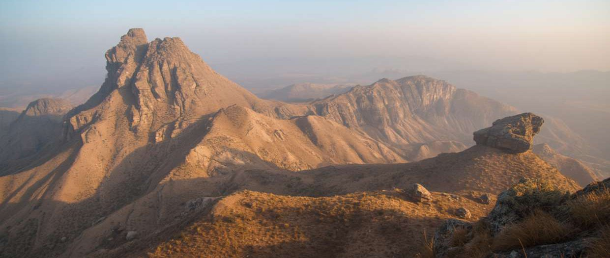

01
Exploration & survey
Data-led prospecting, sampling and resource modelling to map what lies beneath.
Mining & mineral resources
Geoflow operates the full resource lifecycle - discovery, extraction, processing and delivery - with precision, accountability and care for the ground we work.
What we do
The name says it plainly: geo, the ground and its geology, and flow, the steady movement of resources from deep underground to the industries that depend on them.
Data-led prospecting, sampling and resource modelling to map what lies beneath.
Safe, mechanised open-pit and surface mining built around modern equipment.
Crushing, separation and grading that turn raw ore into market-ready material.
Moving product from site to customer with traceability at every handover.
Restoring worked land and managing water, dust and community impact.
Every deposit is a system to be understood - not just a site to be worked.
Our methodThe lifecycle
The layered ridgelines in our mark are geological strata - the deposits we read, reach and refine. From the first survey to final rehabilitation, the flow never stops.

Responsible operations
Mining is often associated with disruption. Geoflow exists to prove the opposite is possible - that extraction can be efficient, transparent and restorative.
Engineering that leaves sites and communities better than we found them.
Independent assays and traceable handovers at every stage of the flow.
Water, dust and land managed from the first survey, not the last.